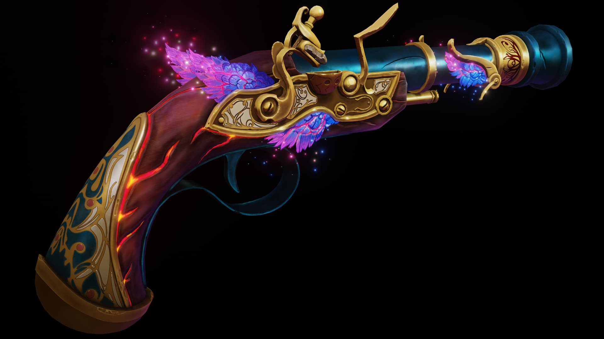
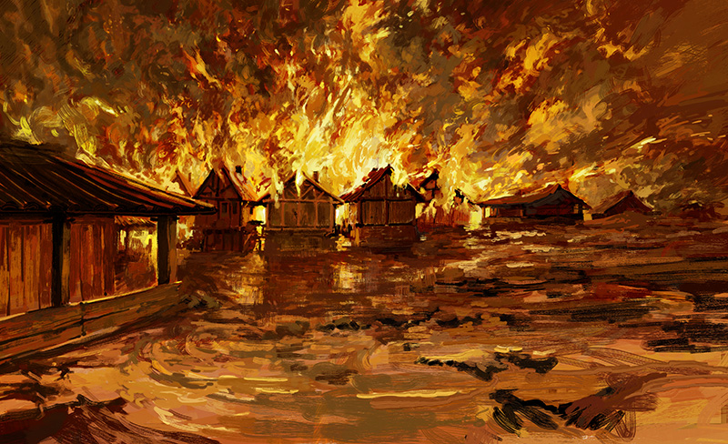

Valenica Nightborne
The Hollow Spark of Rebellion

Basic Info
- Name: Valenica (Valen)
- Origin: Upper City (noble district) → banished to Undercity (filth, poverty)
- Family: Twin sibling; younger sister Emerilis; father (deceased by her hand); mother (Upper City origin, recently discovered); new father figure: Casimir
- Core Personality Traits: Hollow, calculating, disciplined, intelligent, charismatic, dangerous, extremely confident
Race & Class
- Race: Human
- Class: Fighter
Weapons & Items
- Weapon: Counterspell – a forged weapon designed for destruction and silencing, made with Seranova’s help
- Gun Innovation: First person in the world to build a gun
- Marking: Magical tattoo from Project Black Berri suppressing emotions, causing permanent loss of certain feelings
Design: Floral patterns with thorn-like curves - Piercings: Six on her left ear, each with a symbolic stone: light blue, light pink, black, light green, deep purple, dark blue

Counterspell

Life & Background Events
Birth in the Undercity
Twin sibling born; family initially unaware of mother’s Upper City origins
The Whisper of Kas
Kas manipulates her perception, planting doubt and hatred toward her father
Patricide (Age 12)
Kills father under Kas’s influence; separated from sister
The Brand (Project Black Berri)
Banished to Undercity; receives magical sigil suppressing emotions
Casimir
Emerges as a father figure after her father’s death
Meeting Seranova & Counterspell
Constructs Counterspell, a weapon designed to destroy and silence
Gun Innovation
Becomes first person in the world to build a gun
The Prophecy
Embodies prophecy; seeks rebellion by fire
Undercity Fame
Gains notoriety for pit fights in Sector 3; known as one of the best fighters
Drug Addiction
Blissleaf dependency, abstains from alcohol
Hobbies
Loves tinkering and building things
Personality Breakdown
- Core Drive: Fulfill prophecy; reshape world through fire and rebellion
- Positive Traits: Focused, intelligent, strategic, charismatic, highly confident
- Negative Traits: Emotionally muted, ruthless, manipulative, addicted to blissleaf, can be overconfident to a fault
- Signature Behavior: Rarely speaks; when she does, people listen. Rare smile is unsettling
“The spark is born of her hollow heart. Fire shall crown her rebellion, yet it will consume the nameless and the loved as one. When the last ember fades, only ash shall remember her name.”
← Back to Home